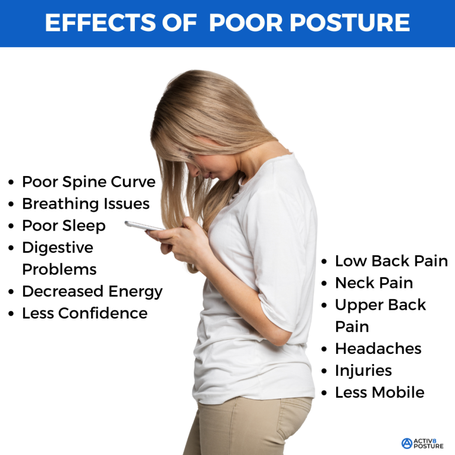

Physical Health Consequences
The combination of sitting for too long, poor posture, and disrupted sleep increases the risk of obesity and cardiovascular disease. Over time, these issues can kill you.

Mental and Emotional Effects
Physical inactivity linked to high technology use is also associated with mental health challenges. Reduced exercise can worsen stress, anxiety, and depression, creating a cycle in which unhealthy habits reinforce both physical and psychological problems.
Academic and Workplace Performance
Health issues resulting from excessive screen time can impair concentration, memory, and productivity. Poor posture, fatigue, and eye strain may reduce effectiveness in school or work settings.